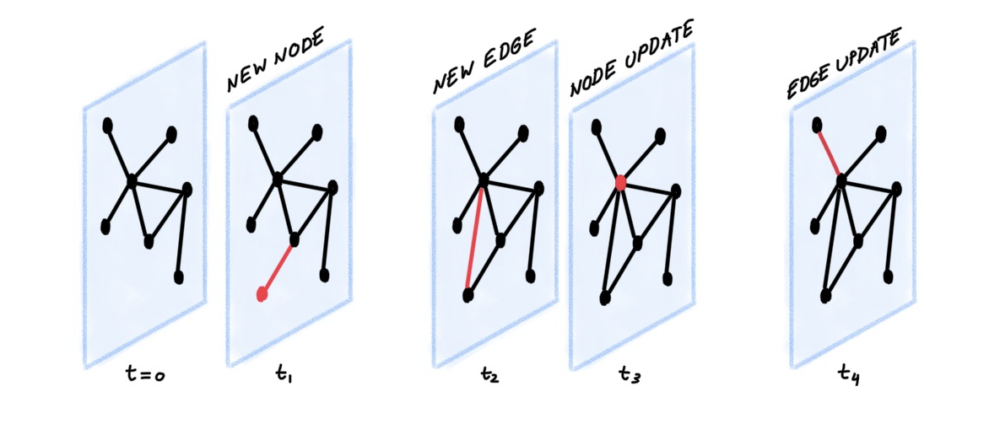
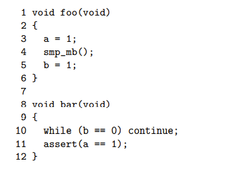
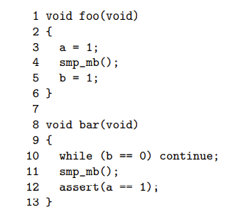
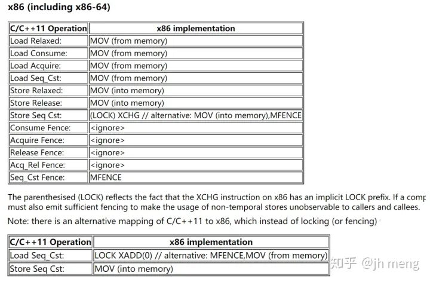

Cache Coherency
Gongze Cao, 2022/09/29
Outline
- Cache structure
- Cache coherence
- MESI protocol
- MESI state and message
- Cache contention
- Memory Barrier
- MESI protocol
Outline
- Cache structure
- Cache coherence
- MESI protocol
- MESI state and message
- Cache contention
- Memory Barrier
- Store buffer
- Store forwarding
- Invalidation queue
- Examples
- Memory Barrier for specific processors
- Store buffer
- MESI protocol
Latency numbers that every programmer should know
- How many instructions a cpu core can execute in one nano?
- How many nano a cpu need to fetch a data item from L1 cache, what about L2/3 cache? Memory?
Cache
- transparent
- we want it to quickly store when it is not full
- we want it to quickly load when it has the answer
- just like a hash map
Cache structure
template<
class Key,
class T,
class Hash = std::hash<Key>,
class KeyEqual = std::equal_to<Key>,
class Allocator = std::allocator< std::pair<const Key, T> >
> class unordered_map;
- What is
Key? - the address obviously(why?)
- virtual address or real address?
Cache structure
template<
class Key,
class T,
class Hash = std::hash<Key>,
class KeyEqual = std::equal_to<Key>,
class Allocator = std::allocator< std::pair<const Key, T> >
> class unordered_map;
- What is
T? Tis so called cache line.- Why do we have cache line? Instead of cache item?
Cache structure
template<
class Key,
class T,
class Hash = std::hash<Key>,
class KeyEqual = std::equal_to<Key>,
class Allocator = std::allocator< std::pair<const Key, T> >
> class unordered_map;
- What is
HashandKeyEqual?
Cache structure

- 16 sets, set is the number of buckets.
- 2 ways, way is the size of buckets.
- hash function being the last but eight bits of address, the equal function is the rest of the address(except the last eight bits).
cache structure
0x12345E00
cache structure
0x12345E00
0x12345
tag
E
hash index
00
offset
cache structure
- Why do we choose the hash function like this? (Hint: locality again)
cache behavior
- what will happen if we want to read a data item?
- when it exists in cache
- when it does not exist in cache
- what will happen if we want to write a data item?
- when it exists in cache
- when it does not exist in cache
cache behavior
SMP scenario requirement
- Consistency: only one core has newest value
- Visibility: No core has outdated value
- Behaves as a whole
Cache protocol
- cache line state as a node
- message as an edge
- action as an update
- Cache behavior as a temporal graph
Temporal graph

MSI protocol
Cache line state:
- modified
- shared
- invalid
MESI protocol
Cache line state:
- modified
- exclusive
- shared
- invalid
MESI protocol
Cache line message:
- read & read-response
- invalidate & invalidate-acknowledge
- Read Invalidate
- Writeback
MESI protocol
MESI state diagram

MESI protocol
Other possible states:
- Owner
MESI protocol
cache contention, aka false sharing, also aka cache pingpong

MESI protocol
cache contention, aka false sharing, also aka cache pingpong
- imagine a thread create an object that takes in a cacheline
- then pass it to other threads to amend
- invalidation costs because of messaging
- we need to avoid it
Q: Do we have suspicious false sharing in our system? What about market data?
MESI protocol
cache contention, aka false sharing, also aka cache pingpong
Remedy(?):
struct keep_apart {
alignas(std::hardware_destructive_interference_size) std::atomic<int> cat;
alignas(std::hardware_destructive_interference_size) std::atomic<int> dog;
};
Make sure the shared cache-line is either read-only, or owned by a certain thread. note: we used both
Memory Barrier
Store buffer

Why do we bother wait for acknowledge?
Store buffer

Store buffer
example 1

Core 0
a=0
Core 1
b=0
Store buffer
Store forwarding
Store buffer is more than a FIFO queue, it is also a map allows being snooped.
Question: why don’t we just write the write request to cache?
Store buffer
example 1

Core 0
b=0 | E
foo()
Core 1
a=0 | E
bar()
Read memory barrier

While we do not have instruction to flush cache, we can flush store buffer.
Invalidate queue
- In practice the store buffer is filled up easily, so we need constantly wait.
- What can we do to shorten the wait time?
Invalidate queue

Invalidate queue
example 2
Core 0
a=0 | S
b=0 | E
foo()
Core 1
a=0 | S
bar()
Invalidation queue
Remedy

Invalidation queue
Memory Barrier

Takeaways:
smp_rmb: flush invalidation queuesmp_wmb: flush store buffersmp_mb: flush both
They are mapped to different implementation in different platforms.
X86
Load Load
X86 and Linux
/arch/x86/include/asm/barrier.h
#ifdef CONFIG_X86_32
#define mb() asm volatile(ALTERNATIVE("lock; addl $0,-4(%%esp)", "mfence", \
X86_FEATURE_XMM2) ::: "memory", "cc")
#define rmb() asm volatile(ALTERNATIVE("lock; addl $0,-4(%%esp)", "lfence", \
X86_FEATURE_XMM2) ::: "memory", "cc")
#define wmb() asm volatile(ALTERNATIVE("lock; addl $0,-4(%%esp)", "sfence", \
X86_FEATURE_XMM2) ::: "memory", "cc")
#else
#define __mb() asm volatile("mfence":::"memory")
#define __rmb() asm volatile("lfence":::"memory")
#define __wmb() asm volatile("sfence" ::: "memory")
#endif
X86 and C++

More topics to explore
- MMU and TLB
- Directory based and snoop based cache synchronization
- Cache replacement strategy
Takeaways:
- Memory order are a representation and result of cache coherence
- The guarantee of memory order is from top to down: Code=>Compiler=>Circuits
Reference: [1]: https://coolshell.cn/articles/20793.html [2]: https://www.bilibili.com/video/BV1e64y1T7J3/ [3]: https://www.bilibili.com/video/BV1fK4y1E7NC/ [4]: https://inst.eecs.berkeley.edu/~cs61c/su18/